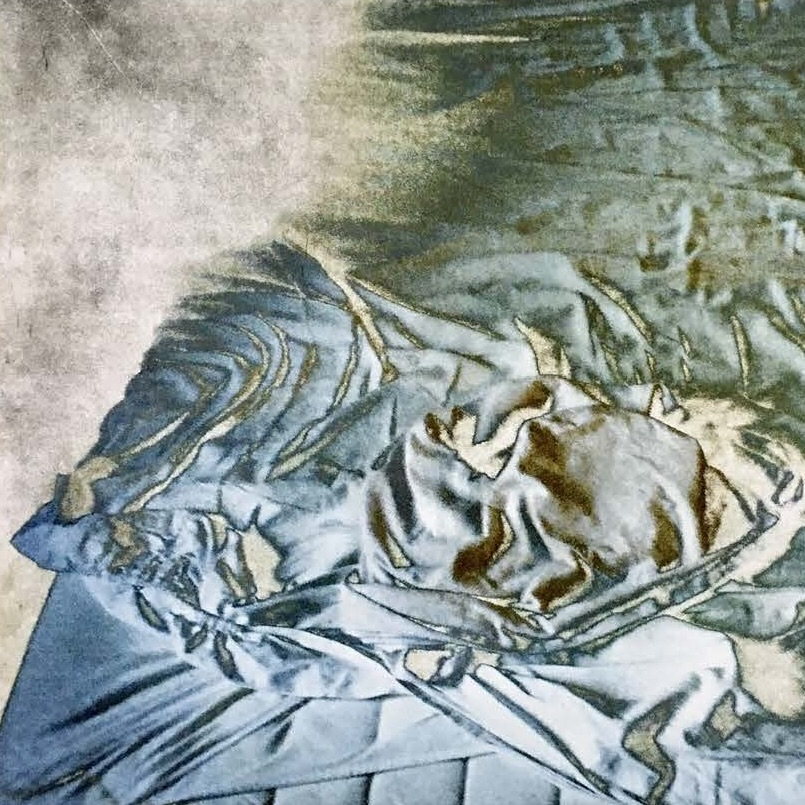

show more
Ich liege im Bett. Das Bett denkt mich. Es ist weich, dass ich nicht weiss, ob ich falle oder ob es mich hält. Das Bett, letzte Hülle, das die verzweifeltsten Schreie auffängt vor draussen. Letzte Hülle, durch die nur das Du treten kann. Weich gezeichnet jede Nacht von all den stillen Schreien und sanftem Sein, all dem Körper, all dem Schlaf. Darin liege ich und forme mit jeder Bewegung eine unendliche Vielzahl an Landschaften, nackt liege ich in einer, wenn ich nicht mehr dort bin; alles steht noch. Das fotografiere ich. Mehrmals. Die Geschichte ist alles, was dazwischensteht. Analog festgehalten, um nur zu beobachten, nicht einzugreifen. Aus Neugier habe ich es trotzdem getan; habe darauf gemalt und bereute es dann, denn ich verdeckte dabei, worum es mir ging. Also wusch ich es aufgelöst weg und holte, was schon dahinter lag, hervor. Wahrheit ist Unverborgenheit.
english translation: I am laying in my bed. The bed thinks me. It is so soft that I am not sure whether I fall or I‘m held. The bed, the last shell that catches the most desperate cries from going outside. The last shell through which only you can step. Softly marked every night by all the silent cries and gentle being, all the body, all the sleep. In here I lie and form an infinite variety of landscapes with every movement. Naked I lie in one when I am no longer there; everything is still as it was. I take pictures of it. Several times. The story is everything in between. Captured in analog form, only to observe, not to intervene. Out of curiosity, I did it anyway; I painted on them and then regretted it, because I covered up what it was all about. So I washed the paint away and brought out what was behind it. Truth is unconcealment.
 show more
show more